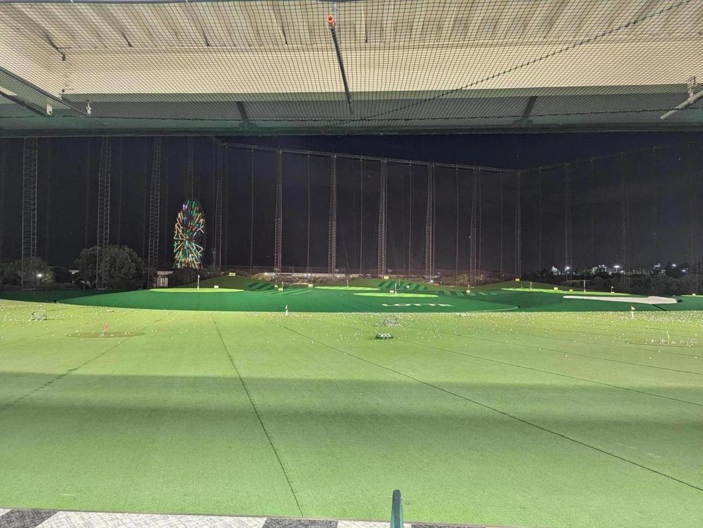

打ちっぱなしにやってきた。人生初打ちっぱなしデビュー。
「ゴルフはスポーツとしてめちゃくちゃ秀逸」というのを聞いたことがあり、前から興味があった。詳しい人に連れて行ってもらえる機会があり行ってきた。
やってみた感想として、ゴルフはヘッドスピード（というより、ヘッドがボールに与える初速）と、ボールに対するヘッドの上手い当て方のトレードオフをコントロールするスポーツだと思った。力いっぱいクラブを振り回すとヘッドスピードがあがるのだが、ボールに当たらなくなる。ゴルフボールは情けないほど小さい。ボールに最適な角度で、最適なヘッド位置で当てようと思うとどうしてもクラブを思いっきり振れなくなる。
つまり体力とパワーが重要だ。重いクラブを力いっぱい振りながら、ボールにちゃんと当てるには、前提となる体の強さや筋肉が必要。この練習を長時間こなすには体力が不可欠となる。